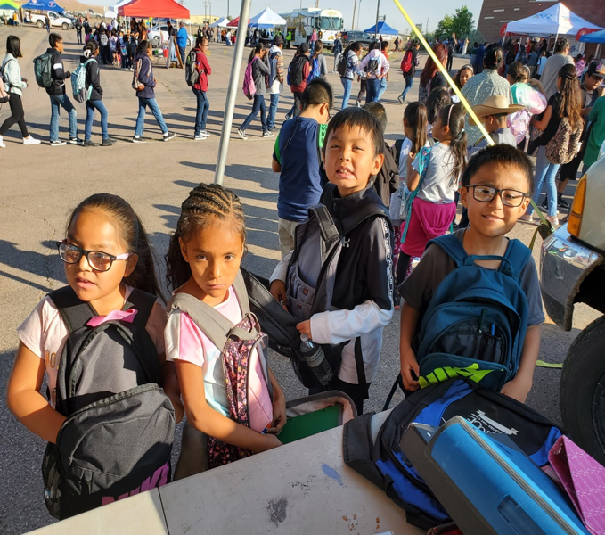

The Navajo Indian reservation includes approximately 350,000 individuals spread out over almost 18 million acres. The median age is 28 years old and the unemployment rate is 56% versus the national average which is less than 4%.
Navajo children lack even basic school supplies such as pens, pencils, notebooks and backpacks.
Copy the model of City Harvest which takes excess food from New York City restaurants and groceries and delivers it to food pantries/soup kitchens.
Obtain extra unused school supplies from children in Roslyn at the end of the school year and donate them to the Navajo children before school starts. Ideally supplies will be collected the last two weeks of school but our public awareness campaign would begin after the April break.
This past year we donated 650 pounds of school supplies collected from the Roslyn school district and delivered them on Navajo Youth Day which was attended by over 1000 Navajo students. We ran out of materials inspiring us to collect even more this year so every child can receive the school supplies they so desperately need.